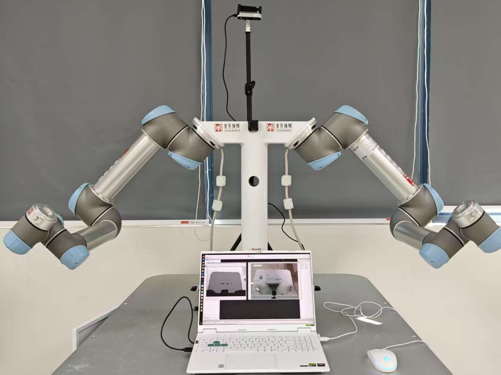
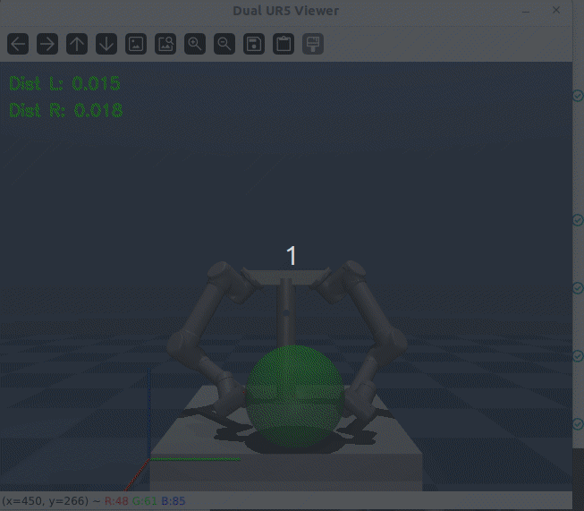

真实平台
物理双臂 UR5 硬件、相机与操作终端，作为最终部署和验证平台。

从真实平台定义任务边界，在 MuJoCo 中完成策略训练，再通过 ROS 2 控制桥接、安全状态机和部署演示验证闭环可行性。
物理双臂 UR5 硬件、相机与操作终端，作为最终部署和验证平台。

用于策略训练的仿真环境，先在仿真中完成探索、迭代和轨迹观察。

将双臂 reaching、碰撞终止、动作惩罚和停稳奖励整理成 Gymnasium 环境，使 PPO 训练目标与后续控制接口保持一致。
策略输出经过动作映射、安全状态机和 JointTrajectoryController，进入真实控制链路。

训练曲线、可视化观测和双臂末端执行演示作为项目真实性证据。
Reality Gap 不是只看训练 reward，而是检查仿真资产、控制频率、关节限幅、归位阈值和异常恢复是否能在真实平台闭环。
Technical Stack
用于真机通信、MoveIt 配置、ros2_control 控制器接入和轨迹执行；上层策略只输出动作语义，底层控制器负责插值、限幅和真实关节执行。
用于构建双 UR5 数字孪生、封装 Gymnasium 环境，并用 PPO 完成 30D 观测到 12D 关节增量动作的策略训练、推理和轨迹分析。
用于组织训练脚本、部署脚本、复位工具、启动文件和状态机逻辑；包含控制器就绪检查、自动归位、异常恢复和多轮测试入口。
作为后续扩展方向，保留 RGB-D 图像、深度、点云、YOLO 检测和 3D 目标消息接口，为抓取、规划和目标条件策略提供数据入口。
/joint_states/left_arm_controller/joint_trajectory/right_arm_controller/joint_trajectory
/ascamera/.../rgb0/image/depth0/image_raw/detected_objects_3d
controller activemove_group readyhome error < 0.05 rad
策略输入包含关节位置、关节速度和末端到目标的相对向量，让策略关注“离目标还差多少”，减少对世界坐标绝对值的依赖。
策略输出可限幅的关节增量，再交给控制器插值执行，降低真实关节突跳、越界和不可控目标位姿风险。
20 Hz 策略层负责决策，125 Hz 控制层负责轨迹跟踪，避免学习算法直接承担底层伺服频率。
INIT、HOMING、AI_RUNNING 显式管理通信、归位、误差阈值和异常恢复，避免策略在未知姿态下接管硬件。
System Architecture
dual_arm.xml 与 dual_ur_plate.urdf 固定机械结构、关节接口、末端坐标系和仿真资产。
自定义 DualUR5Env，设计 30 维状态、12 维动作、碰撞终止、停稳奖励与训练日志。
20 Hz Python 策略推理接入 125 Hz JointTrajectoryController，完成积分、限幅与轨迹平滑。
通过归位、误差阈值、异常复位和部署观测，验证策略能否在真实双臂平台稳定执行。
上层策略保持训练侧接口不变，控制层负责样条插值与关节轨迹跟踪，安全层负责归位、误差检查、异常复位和通信验证。
Engineering Evidence
控制链路展示从真实双臂 UR5 的 joint states 反馈，到 Python RL 控制节点构建观测、PPO 推理、动作增量映射，再经安全状态机发布左右臂 JointTrajectory 指令的闭环过程。
感知链路说明 RGB-D 数据从相机驱动发布到 ROS 2 topic，RGB 图像与深度图共同进入检测节点，后续可输出 3D 目标消息，为抓取目标定位和视觉闭环预留接口。
状态机链路说明真机部署不是直接运行策略，而是先完成通信建立、关节状态等待和归位检查；只有误差满足阈值后才进入 AI_RUNNING，执行过程中继续检查单轮时长和终止条件。
先把机械结构、关节语义、末端坐标系和任务空间控制定义清楚，避免后续训练目标漂移。
dual_arm.xml / dual_ur_plate.urdfcontrol_simple.py把双臂 reaching、碰撞终止、速度惩罚和停稳奖励编码成可学习任务。
DualUR5Env + GymnasiumPPO_train.py承接模型推理、归位恢复、通信联调与真机安全上电，并针对通信延迟、物理约束和动作语义映射做部署保护。
ros2_control.py / reset_robot.pyboot.py / dual_real_driver.launch.pydual_arm.xml
dual_ur_plate.urdf
env.py
PPO_train.py
deploy.py
ros2_control.py
reset_robot.py
boot.py
dual_real_driver.launch.py
dual_real_moveit.launch.py
dual_arm_controllers.yaml
joint_limits.yaml
ascamera
run_ascamera_node.sh
yolo.py
DetectedObject3D.msg
先让 MuJoCo XML 与 ROS 2 URDF 对齐关节、坐标系、末端链接和双臂布局。
在 Gymnasium 环境中训练 PPO，记录曲线、轨迹和 best model，验证策略基本可用。
把 12 维动作映射成有界关节增量，再交给 ROS 2 控制器执行轨迹。
通过归位、误差阈值、通信检查和异常恢复，把策略放进可控的真机闭环。
$ chmod +x ~/ros2_ws/bringup_dual_ur.sh && ~/ros2_ws/bringup_dual_ur.sh
$ ros2 launch dual_ur_plate dual_real_driver.launch.py
$ ros2 launch dual_ur_plate dual_real_moveit.launch.py
$ python3 src/boot.py && python3 src/reset_robot.py
$ python3 src/ros2_control.py --policy logs/best_model.zip
[state] INIT → MOVING_HOME / HOMING → AI_RUNNING → FINISHED
[bridge] PPO action 12D → virtual_qpos → bounded joint trajectory
[vision] ascamera + yolo_detector → /detected_objects_3d
README 中的 RGB-D / YOLO / 3D 目标定位已作为感知扩展链路接入展示，当前仍主要提供目标消息与后续抓取接口；模型路径、相机内参、topic 名称和阈值后续应进一步参数化。